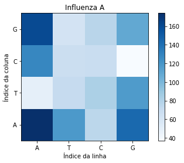

library(reticulate)Warning: package 'reticulate' was built under R version 4.2.1Pretende-se comparar duas sequências de DNA: SARS-CoV-2 identificado na cidade de Wuhan (China) e o Virus da Influenza A identificado na California (US).
O DNA é uma molécula presente em todos os seres vivos, que é responsável por armazenar as caracterı́sticas hereditárias. Ela é composta por sequências de nucleotı́deos, que podem ser de quatro tipos: Adenina (A), Timina (T), Citosina (C) ou Guanina (G).
Neste estudo de caso, queremos avaliar se estruturas com funções parecidas de organismos diferentes têm diferenças. Para isso vamos avaliar a quantidade de pares de nucleotı́deos.
Os dados utilizados para este estudo referem-se a sequências de DNA disponı́veis nos seguintes links: SARS-CoV-2 Wuhan-Hu-1 e Virus da Influenza A (California/07/2009(H1N1)).
Para comparar as duas estruturas requere-se um mapa de calor (Heatmap) que permita realizar a comparação dos pares de nucleotı́deos. Comente sobre os resultados encontrados.

library(reticulate)Warning: package 'reticulate' was built under R version 4.2.1import numpy as np############ Influenza
influenza = open('influenza.txt').read() # Ler o arquivo
influenza = influenza.replace("\n","") # retirar os "\n"
pares_influenza = [] #iniciar
for i in range(len(influenza)-1): #pegar os pares de genomas
pares_influenza.append(influenza[i]+influenza[i+1])
#print(pares_influenza)#Somar as combinações de pares de genomas
a=pares_influenza
AT= a.count('AT')
AC= a.count('AC')
AG= a.count('AG')
AA= a.count('AA')
TA= a.count('TA')
TT= a.count('TT')
TC= a.count('TC')
TG= a.count('TG')
CA= a.count('CA')
CT= a.count('CT')
CC= a.count('CC')
CG= a.count('CG')
GA= a.count('GA')
GT= a.count('GT')
GC= a.count('GC')
GG= a.count('GG')
matriz = np.array([AA,AT,AC,AG,TA,TT,TC,TG,CA,CT,CC,CG,GA,GT,GC,GG])
matriz_influenza = matriz.reshape(4,4)
print(matriz_influenza)[[174 118 75 144]
[ 49 71 82 117]
[128 68 69 37]
[160 62 77 109]]import matplotlib.pyplot as plt
plt.imshow(matriz_influenza, cmap = 'Blues', origin="lower")
plt.xlabel('Índice da linha'); plt.ylabel('Índice da coluna')
plt.xticks((0,1,2,3),['A','T','C','G'])
plt.yticks([3, 2, 1, 0],['G','C','T','A'])
plt.title("Influenza A")
_ = plt.colorbar()
####### Covid-19
covid = open('covid.txt').read()
covid = covid.replace("\n","")
pares_covid = []
for i in range(len(covid)-1):
pares_covid.append(covid[i]+covid[i+1])
#print(pares_covid)
a=pares_covid
AT= a.count('AT')
AC= a.count('AC')
AG= a.count('AG')
AA= a.count('AA')
TA= a.count('TA')
TT= a.count('TT')
TC= a.count('TC')
TG= a.count('TG')
CA= a.count('CA')
CT= a.count('CT')
CC= a.count('CC')
CG= a.count('CG')
GA= a.count('GA')
GT= a.count('GT')
GC= a.count('GC')
GG= a.count('GG')
matriz = np.array([AA,AT,AC,AG,TA,TT,TC,TG,CA,CT,CC,CG,GA,GT,GC,GG])
matriz_covid = matriz.reshape(4,4)
print(matriz_covid)[[2880 2308 2023 1742]
[2377 3215 1413 2589]
[2084 2081 888 439]
[1612 1990 1168 1093]]plt.imshow(matriz_covid, cmap = 'Blues', origin="lower")
plt.xlabel('Índice da linha'); plt.ylabel('Índice da coluna')
plt.xticks((0,1,2,3),['A','T','C','G'])
plt.yticks([3, 2, 1, 0],['G','C','T','A'])
plt.title("Covid-19")
_ = plt.colorbar()